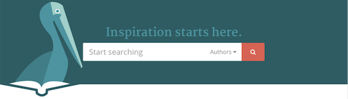
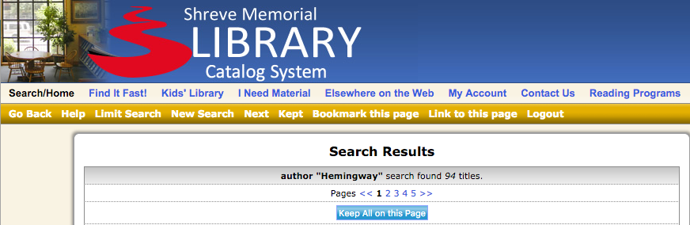

PROFESSIONAL PROJECT // CASE STUDY
chemyx homepage redesign
MAXIMIZING VALUE TO CUSTOMERS, STARTING FROM PAGE ONE
VIEW THE RESULTSOVERVIEW
After eight months without any updates, there was no denying the Chemyx, Inc. homepage could use a facelift. But a homepage doesn’t just serve as curb appeal.
Together with my team of a Ph.D. scientist, a copywriter, a UI designer, and a developer, I wanted to do more than just upgrade the look.
Armed with user research and a collaborative approach from the team, I wanted to ensure our site’s first impression would better convey our desire to meet multiple perspectives of customer needs.
THE PROBLEM
The existing homepage was created before I came on staff at Chemyx, and while it did serve one purpose as an uncluttered front door to the site, there was room to make it more functional for users.
When we began this project, Google Analytics showed 37 percent of our traffic entered the site through the homepage—the most frequently used entry point. To this point, our team had spent the majority of our time improving pages deeper in the purchasing funnel.
We felt it was time to climb back out and make sure we were capturing as much traffic as possible through this highest-trafficked first impression.
The existing homepage had a lower-than-expected bounce rate, less than 40 percent, even while ranking as the most frequent starting point for site visitors. But the team rightly noted that the page content merely mirrored the elements in the top navigation. The page didn’t offer any inherent value of its own. It also didn’t expressly give customers a reason to believe in our market authority.
PROJECT REQUIREMENTS
- All visitors should be able to discover product information upfront that speaks to their research field.
- New visitors’ consumer confidence should be increased by an element of social proof at this entry point.
- Returning customers should be able to easily access support or a customer representative.
AFTER
USER RESEARCH
COMPETITIVE ANALYSIS VIA USER TESTING
I wrote a user test within Usertesting.com’s platform to compare the experience of our homepage v. several of our competitors. We don’t have high levels of brand recognition as do many of our better-known industry peers, so I knew it would be important to learn what elements on our competitors’ homepages struck potential customers as trustworthy, in an attempt to hold our own against them.
I developed a participant screener to seek out testers who work or study in scientific research fields, scientists who not only use syringe pumps but who also have some say in the equipment purchases for their research labs.
With the help of the team, I chose four competitors of varying size and credibility to test against to see how we compared across the spectrum. The test platform then recruited three participants per competitor comparison who recorded their screens and audio as they provided feedback throughout the script’s tasks.
VIEW THE TEST SCRIPTUSER INSIGHTS
The testers’ insights showed me we needed to:
- Use photography that includes people using the equipment to make a human connection as well as adding context to the product’s usability. Our testers pointed out whenever they noticed stock photography of a generic lab environment.
- Explain which problems our pumps solve for different research applications. This would increase confidence that 1. the product would work for their specific needs and 2. the products could be trusted because the manufacturer is well-versed in scientific processes.
- Add elements that will serve as product reviews. Though most scientific manufacturing sites like ours don’t seem to have a streamlined way of collecting public product feedback, our customers are still consumers with Amazon-esque expectations.
- Make some sort of allusion to the product pricing upfront. Before continuing further, users wanted an idea of the financial commitment necessary. This presented a challenge for us as our pricing is contingent on location.
PERSONAS
This project relied on our team's exisiting marketing personas that I helped create alongside the marketing manager. The entire site, and especially the homepage, needs to speak to our three main groups:
- scientist end user
- potential distributor partner
- potential custom-manfacturing client
USER FLOWS
User flows helped me identify and communicate to the team the additional pages we'd still need to create to be able to catagorize our products by series and application. Though this would merely require publishing under an existing page template built by our developer, I wanted to ensure all UI and marketing copy would be accounted for on these new pages. These additions should also help our SEO rankings in these specific market areas.
VIEW FLOWSDESIGN ITERATION
HERO SECTION
write about hero section here
hero section caption

APPLICATIONS SECTION
write about applications here
applications caption
SERIES SECTION
write about series here
series caption
LITERATURE SECTION
write about literature here
literature caption
SUPPORT SECTION
write about support here
support caption
TESTIMONIAL SECTION
write about testimonial here
testimonial caption
KEY LEARNINGS
After the page has launched, and enough time has passed to begin analyzing the traffic data through Google Analytics and HotJar, I'd want to know:
- Did traffic to product pages increase for visitors who enter site through the homepage?
- Did bounce rate from the homepage decrease?
- For sessions that begin at the homepage, did the number of pages visited per session increase?
- Where do people go next most frequently from the homepage?
- Did use of our support topics increase?
- Did the creation of application-specific pages help us rank higher in search engines for those research fields?
Because there are always plans left on the back burner, I'd still like to implement:
- A video background in the hero section, for more visual interest and to better display the functionality of the product.
- More fleshed-out application-specific and series-specific pages instead of our pre-existing comparison-page template.
- More detailed animations on the product cards within the series section for visual interest and as a better demonstration of the products.
- Journal logos to correspond with the research literature, once approval is received.